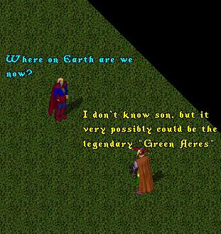
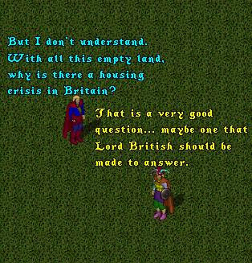
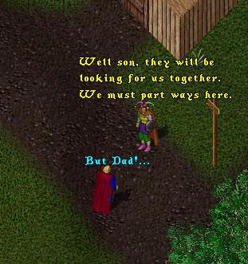
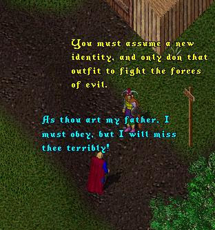
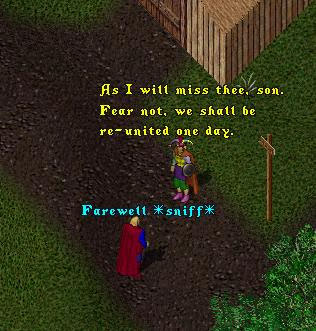
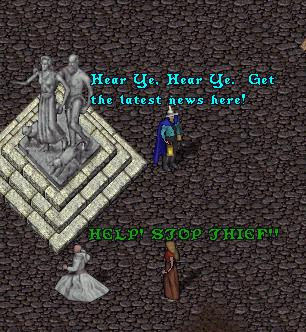
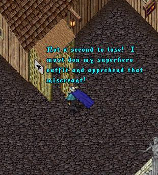
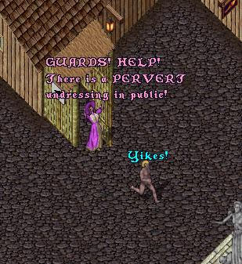

Episode 96: Son of ImaNewbie (Part 5). This episode marks a return to the series featuring ImaNewbie and SuperNewbie, his long lost son. For a refresher on what's happening here it might be a good idea to head back to episodes #86, #87, #89 and #90. You can get to episode #86 by clicking HERE.
If you will remember the last time we saw
ImaNewbie and SuperNewbie together they
had just escaped from prison and found
themselves in a seemingly endless black void.

After wandering aimlessly for days the intrepid
pair finally emerge from the blackness into a
huge grassy plain, devoid of trees, houses, or
just about anything else for that matter.


Eventually the two make it back to Britannia and a
path on the outskirts of Britain. Here ImaNewbie
decides that he must make a painful decision.



Heeding his fathers advice SuperNewbie dons his
disguise and takes up the role of Klark Bent, mild-
mannered town cryer for the town of Minoc. But it
is not long before his role as crimefighter and
defender of justice is called upon.

Spying a damsel in distress, Klark springs into
action, rushing to the nearest carrier-pidgeon
booth to don his SuperNewbie outfit.

